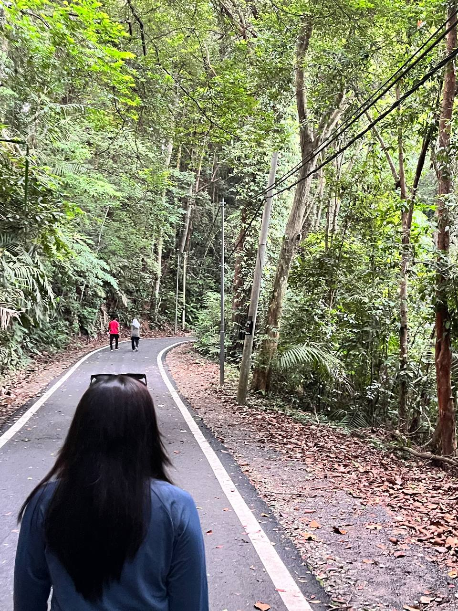
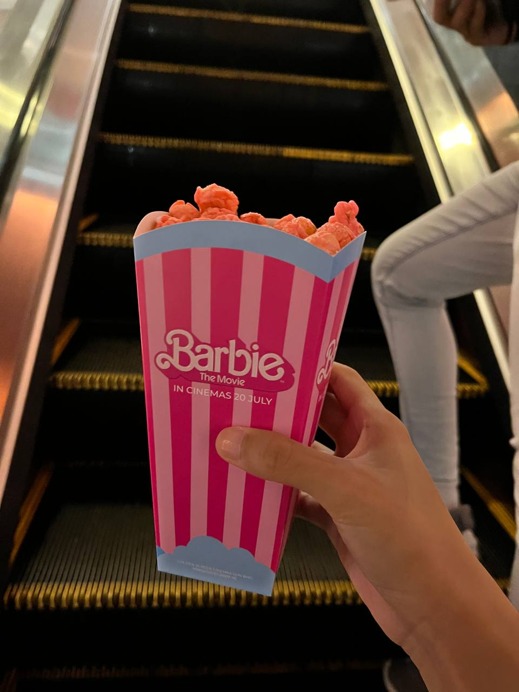

<!DOCTYPE html>
<html lang="en">
    <head>

        <title>MORE OF HER</title>

<body background="images/wallpaper 10.jpg"></body>

<!DOCTYPE html>
<html>
<head>
<meta name="viewport" content="width=device-width, initial-scale=1">
<style>
body {
  margin: 0;
  font-family: bookman old style;
}

.topnav {
  overflow: hidden;
  background-color: #080202;
}

.topnav a {
  float: left;
  color: white;
  text-align: center;
  padding: 14px 16px;
  text-decoration: none;
  font-size: 17px;
}

.topnav a:hover {
  background-color: #ddd;
  color: black;
}

.topnav a.active {
  background-color: #FFAAC9;
  color: white;
}
</style>
</head>
<body>

<div class="topnav">
  <a href="home.html">Home</a>
  <a href="education.html">Education</a>
  <a class="active" href="moreofher.html">More of Her</a>
</div>


</body>
</html>
                 <!--more of her section starts-->

                 <br></br>
                 <br></br>

    <section class="more of her" id="more of her"></section>
    <center>
    <h1 class="heading"> <span> More of </span> Her</h1>
</center>
<br></br>
    
    <center>
    <p><font face="Bookman old style" size="3"> <h2><b>She is 21 years old as of 2023, loves coffee as it helps her to get through her day and loves dressing up but only when she is in the mood for it</b></h2></p>
    
    
    
    
    <br>
    <br>
</center>

<center>

<p><font face="bookman old style" size="3" <h2><b>She loves the colour pink and flowers too! Despite not knowing how to take care of flowers that well, she still loves receiving flowers</b></h2></font></p>
<br>


</center>

<center>
    
    <p><font face="bookman old style" size="3" <h2><b>She also finds the joy in nature & hiking! She loves exploring new places to hike</b></h2></font></p>
    <br>
    
    
    
</center>

<center>
    
    <p><font face="Bookman old style" size="3" <h2><b>Have she already mentioned about how she loves pink? Of course she is crazy about barbie too!</b></h2></font>></p>
    <br>
    
    
    
</center>

<center>
    
    <p><font face="bookman old style" size="3" <h2><b>Her favorite yogurt icecream debuting on her website! Llao llao for life</b></h2></font></p>
    
    
</center>

<center>
    
    <p><font face="bookman old style" size="3"> <h2><b>It would be ridiculous to leave out her current obsession into kpop, to be more specific NCT; 
        <br>
        which explains her website background! Her hobby is spending money on albums and collectting photocards of her bias who is NCT 127 Kim Jungwoo</b></h2></font></p>
    <br>
        
    
    
    
</center>

<center>
    
    <p><font face="bookman old style" size="3"> <h2><b>She's a sunset enthusiast too!</b></h2></font></p>
    <br>
    
    
</center>

</section>

    <!--more of her section ends-->

</head>
</html>